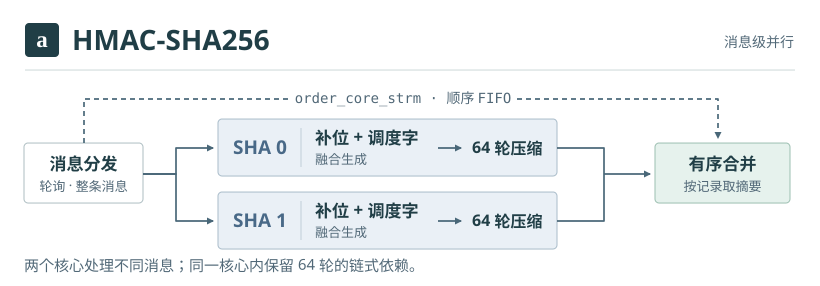
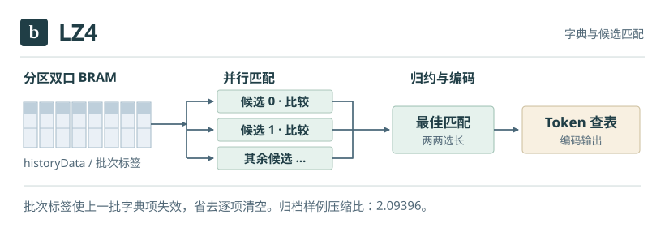
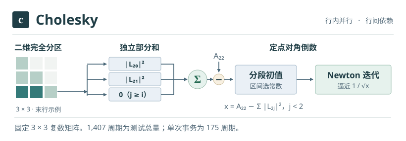
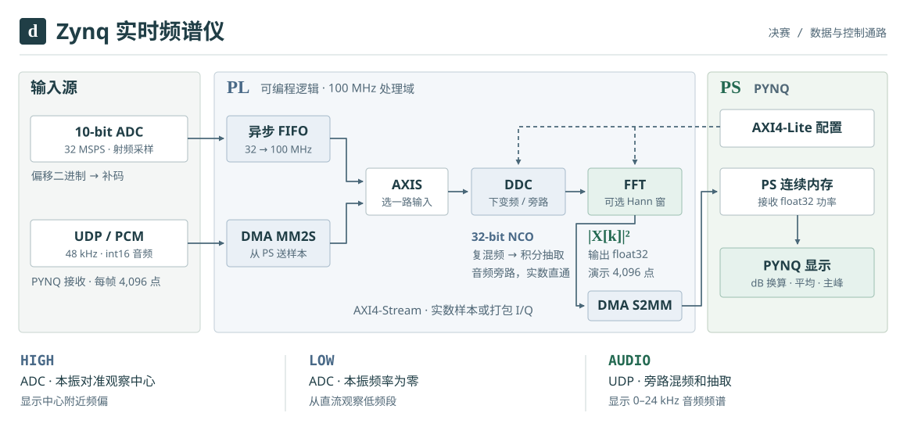
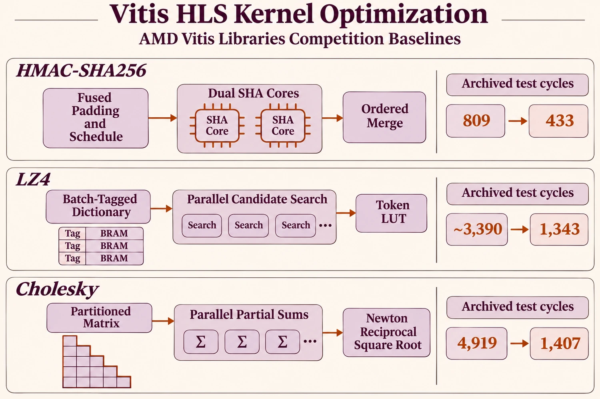
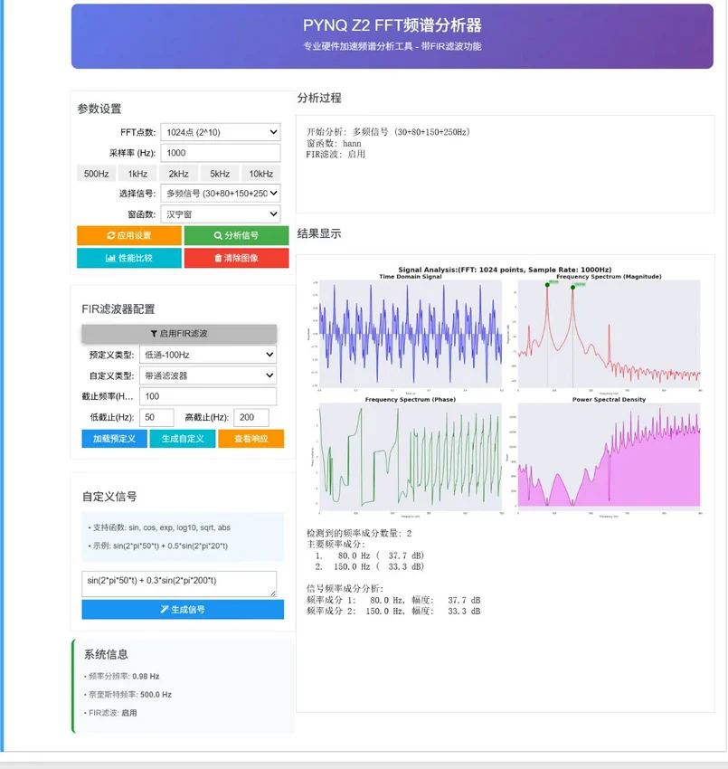

ENGINEERING RECORD
/
02
Signal processing
Vitis HLS.
三个算子，一台频谱仪
初赛分别优化消息认证、压缩和矩阵分解；决赛换到 Zynq，显示射频或音频输入的功率谱。
全国二等奖2025 · FPGA 创新设计赛 · AMD 赛道
项目仓库 ↗
FIG. 02A
算子微架构、协同仿真与整机信号链

01 / PRELIMINARY
三个算子，各自省下了哪些周期？
FIG. 02BSHA-256：按完整消息分发


FIG. 02CLZ4：用标签替代字典清空


FIG. 02DCholesky：展开行内部分和


02
/
REFERENCE
基线对照
表中为各自赛题负载的总执行周期。决赛以 ADC 或 UDP 为输入，经过 FFT 得到功率谱，不计入初赛周期对照。
| 归档用例 | 基线 → 优化 / 周期 | 缩减 |
|---|---|---|
| HMAC-SHA256 | 809 → 433 | 46.5% |
| LZ4 | 约 3,390 → 1,343 | 约 60.4% |
| Cholesky | 4,919 → 1,407 | 71.4% |
03 / FINALS
从采样时钟到屏上的频谱
FIG. 02E双输入、可编程逻辑与 PYNQ

频率刻度FFT 支持 1,024 至 16,384 点。音频演示以 48 kHz 采样、每帧 4,096 点，相邻 FFT 频点约隔 11.72 Hz。
从功率到显示FFT 核输出 32 位浮点功率；PS 负责换算 dB、指数平均和主峰标记。查看接口与模式说明 ↗
04
/
ORIGINAL MATERIAL
原始材料
档案 / 01
原始算子架构


档案 / 02
竞赛应用界面

